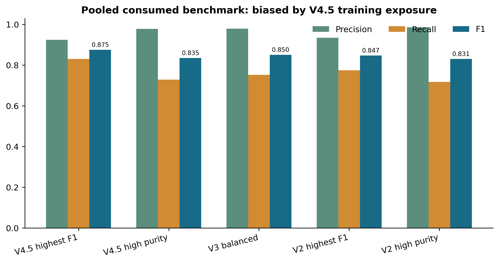
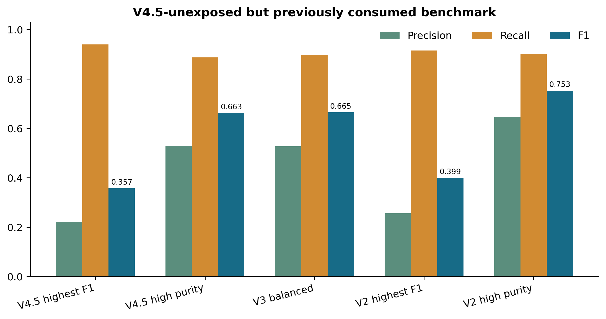
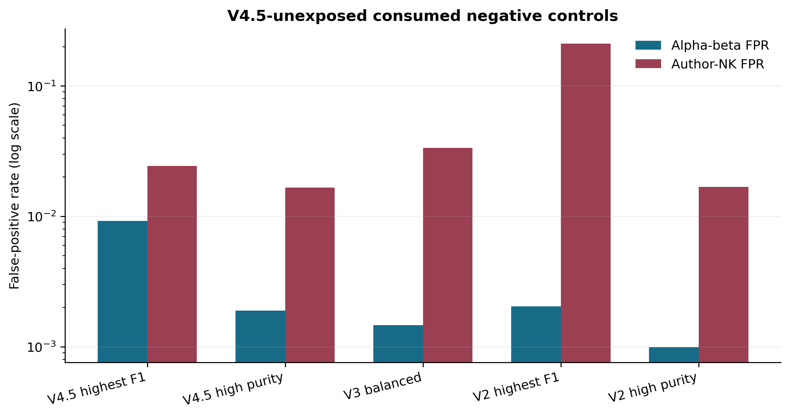
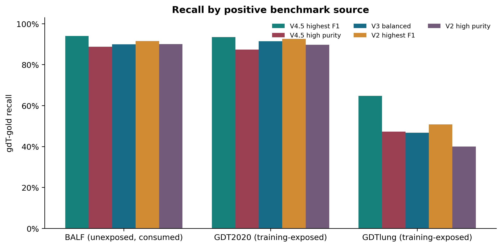
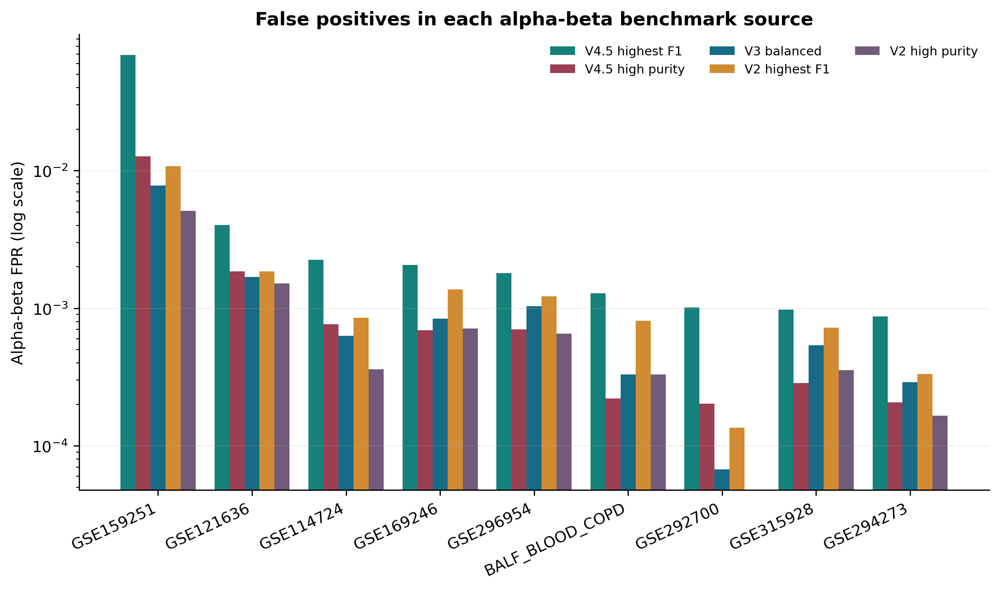
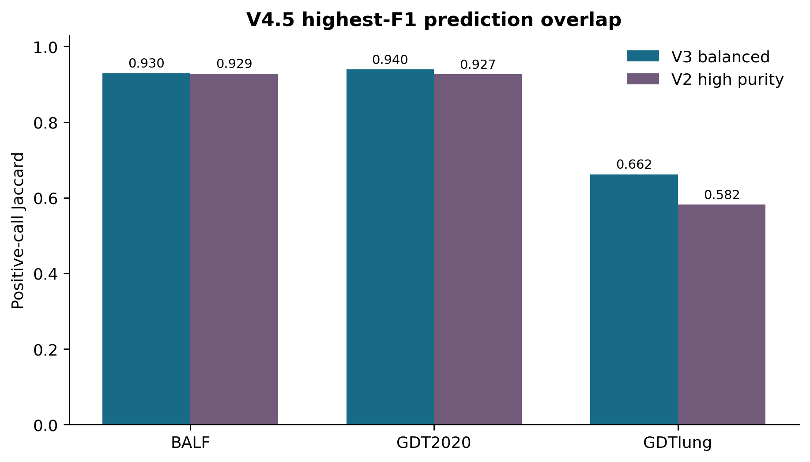

Executive conclusion
V4.5 highest-F1 pooled F1 is 0.875, but its unexposed alpha-beta FPR is 0.923% versus 0.146% for V3 and 0.099% for V2 high-purity. V4.5 high-purity reduces alpha-beta FPR to 0.189%, but unexposed F1 is 0.663 versus 0.665 for V3 and 0.753 for V2 high-purity.
Validity boundary
- Training-exposed for V4.5: GDT2020 and GDTlung.
- Unexposed to V4.5 but consumed previously: BALF and eight extension sources.
- No threshold, feature, exclusion, or calibrator changed.
- No result in this report is eligible for promotion.
| V4.5 exposure | Source | Cells |
|---|---|---|
| training_exposed_consumed | GDT_2020AUG_woCOV | 25,904 |
| training_exposed_consumed | GDTlung2023july_7p | 15,175 |
| unexposed_but_previously_consumed | BALF_BLOOD_COPD | 28,328 |
| unexposed_but_previously_consumed | GSE114724 | 22,283 |
| unexposed_but_previously_consumed | GSE121636 | 5,954 |
| unexposed_but_previously_consumed | GSE159251 | 32,420 |
| unexposed_but_previously_consumed | GSE169246 | 62,695 |
| unexposed_but_previously_consumed | GSE292700 | 14,801 |
| unexposed_but_previously_consumed | GSE294273 | 24,137 |
| unexposed_but_previously_consumed | GSE296954 | 44,371 |
| unexposed_but_previously_consumed | GSE315928 | 59,411 |
Pooled benchmark

| Model | Predicted | precision | recall | f1 | alpha-beta FPR | NK FPR |
|---|---|---|---|---|---|---|
| V4.5 highest F1 | 37,651 | 92.478% | 83.039% | 0.8750 | 0.923% | 2.443% |
| V4.5 high purity | 31,212 | 97.844% | 72.832% | 0.8350 | 0.189% | 1.658% |
| V3 balanced | 32,210 | 97.870% | 75.181% | 0.8504 | 0.146% | 3.352% |
| V2 highest F1 | 34,744 | 93.455% | 77.437% | 0.8470 | 0.204% | 21.074% |
| V2 high purity | 30,501 | 98.626% | 71.742% | 0.8306 | 0.099% | 1.682% |
V4.5-unexposed consumed cells


| Model | Predicted | precision | recall | f1 | alpha-beta FPR | NK FPR |
|---|---|---|---|---|---|---|
| V4.5 highest F1 | 3,633 | 22.048% | 94.014% | 0.3572 | 0.923% | 2.443% |
| V4.5 high purity | 1,429 | 52.904% | 88.732% | 0.6629 | 0.189% | 1.658% |
| V3 balanced | 1,452 | 52.755% | 89.906% | 0.6649 | 0.146% | 3.352% |
| V2 highest F1 | 3,054 | 25.540% | 91.549% | 0.3994 | 0.204% | 21.074% |
| V2 high purity | 1,186 | 64.671% | 90.023% | 0.7527 | 0.099% | 1.682% |
BALF positive benchmark
BALF was not fitted by V4.5, but it was already inspected during earlier model rounds. It is diagnostic, not external.
| Model | Predicted | precision | recall | f1 | alpha-beta FPR | NK FPR |
|---|---|---|---|---|---|---|
| V4.5 highest F1 | 836 | 95.813% | 94.014% | 0.9491 | 0.129% | 0.000% |
| V4.5 high purity | 762 | 99.213% | 88.732% | 0.9368 | 0.022% | 0.000% |
| V3 balanced | 776 | 98.711% | 89.906% | 0.9410 | 0.033% | 0.394% |
| V2 highest F1 | 806 | 96.774% | 91.549% | 0.9409 | 0.081% | 1.575% |
| V2 high purity | 776 | 98.840% | 90.023% | 0.9423 | 0.033% | 0.000% |
V4.5 highest-F1 has the best BALF F1 (0.949) and recall 94.01%, with 0.129% alpha-beta FPR and zero observed author-NK false positives. V4.5 high-purity reaches 99.21% precision but recalls 88.73%.
Positive sources and exposure effect

| Source | V4.5 exposure | Model | gdT gold | Recall |
|---|---|---|---|---|
| BALF_BLOOD_COPD | unexposed_but_previously_consumed | V4.5 highest F1 | 852 | 94.014% |
| GDT_2020AUG_woCOV | training_exposed_consumed | V4.5 highest F1 | 25,904 | 93.422% |
| GDTlung2023july_7p | training_exposed_consumed | V4.5 highest F1 | 15,175 | 64.699% |
| BALF_BLOOD_COPD | unexposed_but_previously_consumed | V4.5 high purity | 852 | 88.732% |
| GDT_2020AUG_woCOV | training_exposed_consumed | V4.5 high purity | 25,904 | 87.330% |
| GDTlung2023july_7p | training_exposed_consumed | V4.5 high purity | 15,175 | 47.189% |
| BALF_BLOOD_COPD | unexposed_but_previously_consumed | V3 balanced | 852 | 89.906% |
| GDT_2020AUG_woCOV | training_exposed_consumed | V3 balanced | 25,904 | 91.403% |
| GDTlung2023july_7p | training_exposed_consumed | V3 balanced | 15,175 | 46.662% |
| BALF_BLOOD_COPD | unexposed_but_previously_consumed | V2 highest F1 | 852 | 91.549% |
| GDT_2020AUG_woCOV | training_exposed_consumed | V2 highest F1 | 25,904 | 92.573% |
| GDTlung2023july_7p | training_exposed_consumed | V2 highest F1 | 15,175 | 50.807% |
| BALF_BLOOD_COPD | unexposed_but_previously_consumed | V2 high purity | 852 | 90.023% |
| GDT_2020AUG_woCOV | training_exposed_consumed | V2 high purity | 25,904 | 89.735% |
| GDTlung2023july_7p | training_exposed_consumed | V2 high purity | 15,175 | 40.000% |
Training-exposed pooled recall
| Model | Predicted | Recall | f1 |
|---|---|---|---|
| V4.5 highest F1 | 34,018 | 82.811% | 0.9060 |
| V4.5 high purity | 29,783 | 72.502% | 0.8406 |
| V3 balanced | 30,758 | 74.875% | 0.8563 |
| V2 highest F1 | 31,690 | 77.144% | 0.8710 |
| V2 high purity | 29,315 | 71.362% | 0.8329 |
Per-dataset false positives

| Source | Model | alpha-beta gold | alpha-beta FPR | Author NK | NK FPR |
|---|---|---|---|---|---|
| BALF_BLOOD_COPD | V4.5 highest F1 | 27,222 | 0.129% | 254 | 0.000% |
| GSE114724 | V4.5 highest F1 | 22,283 | 0.224% | 0 | - |
| GSE121636 | V4.5 highest F1 | 5,954 | 0.403% | 0 | - |
| GSE159251 | V4.5 highest F1 | 32,420 | 6.909% | 0 | - |
| GSE169246 | V4.5 highest F1 | 54,925 | 0.206% | 7,770 | 2.523% |
| GSE292700 | V4.5 highest F1 | 14,801 | 0.101% | 0 | - |
| GSE294273 | V4.5 highest F1 | 24,137 | 0.087% | 0 | - |
| GSE296954 | V4.5 highest F1 | 44,371 | 0.180% | 0 | - |
| GSE315928 | V4.5 highest F1 | 59,411 | 0.098% | 0 | - |
| BALF_BLOOD_COPD | V4.5 high purity | 27,222 | 0.022% | 254 | 0.000% |
| GSE114724 | V4.5 high purity | 22,283 | 0.076% | 0 | - |
| GSE121636 | V4.5 high purity | 5,954 | 0.185% | 0 | - |
| GSE159251 | V4.5 high purity | 32,420 | 1.271% | 0 | - |
| GSE169246 | V4.5 high purity | 54,925 | 0.069% | 7,770 | 1.712% |
| GSE292700 | V4.5 high purity | 14,801 | 0.020% | 0 | - |
| GSE294273 | V4.5 high purity | 24,137 | 0.021% | 0 | - |
| GSE296954 | V4.5 high purity | 44,371 | 0.070% | 0 | - |
| GSE315928 | V4.5 high purity | 59,411 | 0.029% | 0 | - |
| BALF_BLOOD_COPD | V3 balanced | 27,222 | 0.033% | 254 | 0.394% |
| GSE114724 | V3 balanced | 22,283 | 0.063% | 0 | - |
| GSE121636 | V3 balanced | 5,954 | 0.168% | 0 | - |
| GSE159251 | V3 balanced | 32,420 | 0.777% | 0 | - |
| GSE169246 | V3 balanced | 54,925 | 0.084% | 7,770 | 3.449% |
| GSE292700 | V3 balanced | 14,801 | 0.007% | 0 | - |
| GSE294273 | V3 balanced | 24,137 | 0.029% | 0 | - |
| GSE296954 | V3 balanced | 44,371 | 0.104% | 0 | - |
| GSE315928 | V3 balanced | 59,411 | 0.054% | 0 | - |
| BALF_BLOOD_COPD | V2 high purity | 27,222 | 0.033% | 254 | 0.000% |
| GSE114724 | V2 high purity | 22,283 | 0.036% | 0 | - |
| GSE121636 | V2 high purity | 5,954 | 0.151% | 0 | - |
| GSE159251 | V2 high purity | 32,420 | 0.509% | 0 | - |
| GSE169246 | V2 high purity | 54,925 | 0.071% | 7,770 | 1.737% |
| GSE292700 | V2 high purity | 14,801 | 0.000% | 0 | - |
| GSE294273 | V2 high purity | 24,137 | 0.017% | 0 | - |
| GSE296954 | V2 high purity | 44,371 | 0.065% | 0 | - |
| GSE315928 | V2 high purity | 59,411 | 0.035% | 0 | - |
Prediction overlap

For BALF gdT gold, V4.5 highest-F1 finds 46 cells missed by V3 but misses 11 found by V3. In GDTlung it finds 3,088 cells beyond V3 while missing 351 V3 calls; this difference cannot be interpreted as external improvement because GDTlung trained V4.5.
Model decision
- V3 balanced remains the default. It retains the strongest defensible balance across the consumed benchmark without V4.5's new training exposure.
- V2 high-purity remains the conservative fallback. It has the lowest unexposed alpha-beta FPR and the best unexposed consumed F1.
- V4.5 highest-F1 is not deployment-ready. Its GSE159251 false-positive rate is unacceptable for a rare-cell classifier.
- V4.5 high-purity is promising on BALF but lacks a reproducible advantage over V3/V2 across negative sources.
- No V4.5 threshold should be changed using this report. A new untouched positive and negative benchmark is required.
Integrity and reproducibility
| Check | Pass | Evidence |
|---|---|---|
| v4_5_thresholds_unchanged | 1 | {"high_purity": 0.9657050967216492, "highest_f1": 0.8595057725906372} |
| v2_v3_predictions_checksum | 1 | 4e9157ecd6ae4368097ceb5d90cb1b6676d1ae6041c1a9d2cd89fc74e65d927b |
| common_feature_cache_checksum | 1 | b793cdbed2dbc294fabe17ef59c4c038b4f915ecbbf0d8238080b6e80c98b4ad |
| training_exposed_sources_labeled | 1 | GDT_2020AUG_woCOV,GDTlung2023july_7p |
| eligible_for_promotion | 1 | false; consumed diagnostic only |
Evaluator: workflows/gdtai/evaluate_gdtai_v4_5_vs_v2_v3_consumed.py
V4.5 contract SHA-256: 974d0687de4a93688b4e0d665b276458c90f6f5a772615dbeea9cbb2f66072b2
Input V2/V3 predictions SHA-256: 4e9157ecd6ae4368097ceb5d90cb1b6676d1ae6041c1a9d2cd89fc74e65d927b
Output predictions SHA-256: dd5696a59e19048562d0f24eb8b55d681937166d328dd7dc4f3866a44fda0ba1